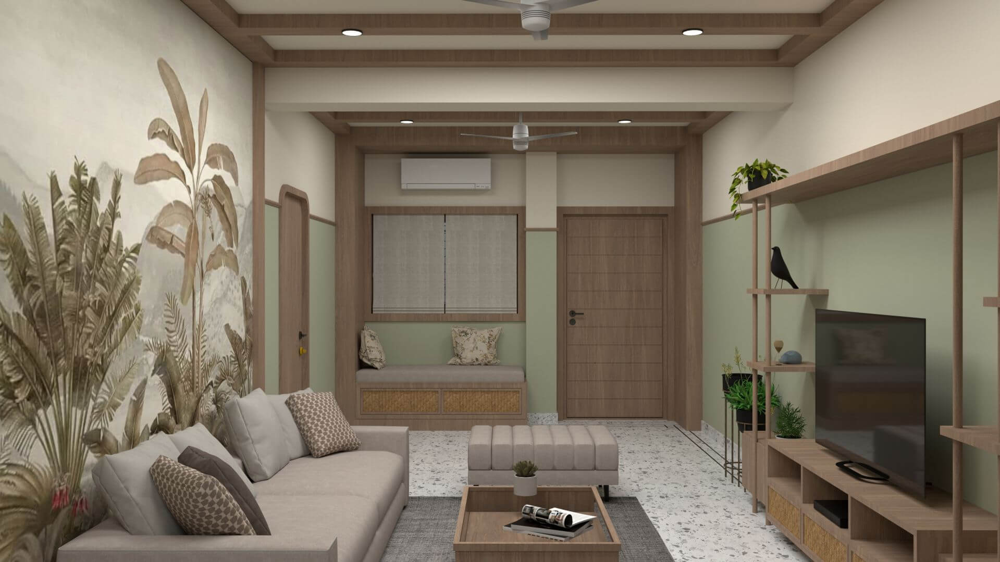
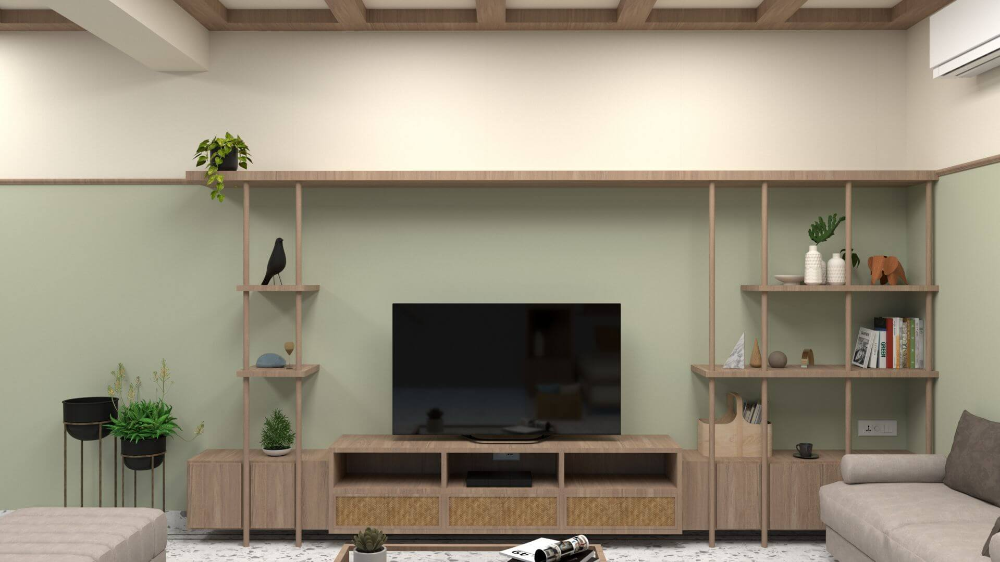
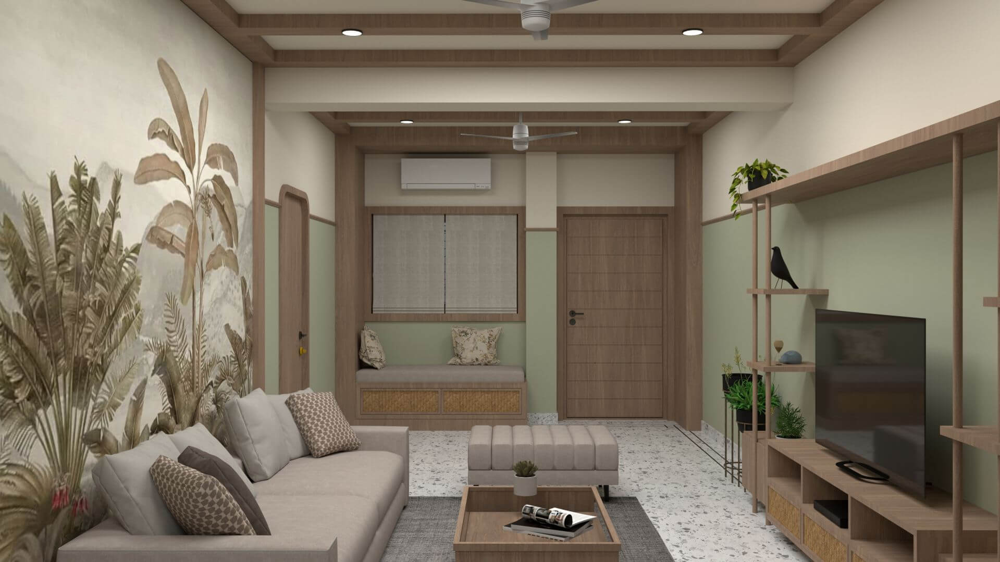
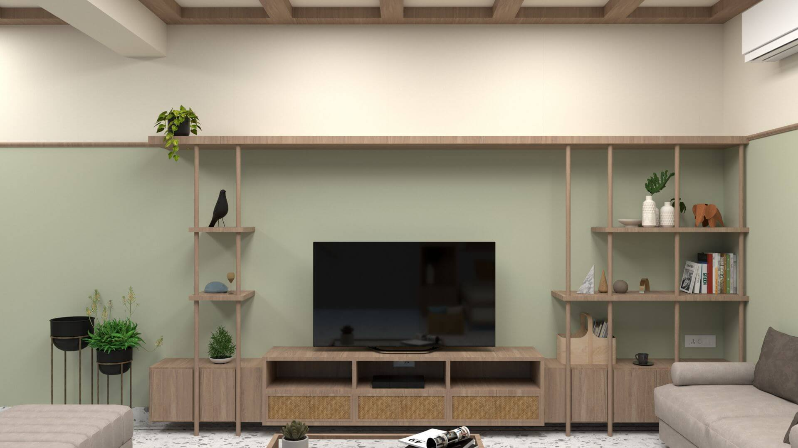

Something Borrowed Something New
Location: Janakpur, Nepal
Type: Interior
Super built up area: 2100sqft
Status: Ongoing
The property is located in a dense neighborhood and has a long and narrow layout. The front side consists of the parking, living room, master bedroom, guest bedroom and a common toilet. Whereas the rear side has a kid's bedroom, common toilet, store room and the dining room sandwiched between the kitchen and puja room.
Concept
The design was inspired by a very simple idea that we wanted to use traditional knowledge in relevance to today's context. The interior is contemporary and minimalistic yet you can find subtle touches of tradition and vernacular with lippan art which originates from the northern parts of India, weaved matts which adds texture to the furniture and interiors, Terrazzo flooring otherwise known as mosaic flooring which is one of the oldest types of flooring used. All these handmade features humanized the design with its imperfections and brought in a multi-layered feel to the space that were well amalgamated with the clean contemporary style of the interiors.
Since the weather in terai area of Nepal is hot and humid almost throughout the year the concept was to make the interiors feel cool and calm, hence cool tones of colors was used and the warmth was provided with the furniture and lighting. The pastel green shade with the teak wood Patti around the entire house gives a cohesive feel to the house, something that ties the entire space together. The remaining part of the wall and ceiling was painted in an off-white tone to give the feeling of spaciousness.
Floor Plan
We decided to follow strict vastu principles. For example, the facing of WC and sink, facing north while sitting in the living room, Mirrors were placed only on east wall and position of beds was some of the vastu principles we followed while designing the layout of the ground floor.
Living room
We decided to opt out of using false ceiling and used plywood beams instead. It helped in maintaining the height as that was also one of the concerns of the client as the existing false ceiling was low. The rest of the interiors is kept simple and minimalistic with intricate details in terms of using materials and textures like the weaved matts we used for drawers.
 



Bedrooms
We went with similar colour tones that was used throughout the rest of the house. The headboard was made with a light powder pink terrazzo which complemented the pastel green walls.
Dining and kitchen
As we know the environment that we're surrounded by has a huge impact on our mental well- being. When you enter a space, you are immediately drawn to an opening or a window and you feel more open and calmer. Imagine living in a space with no windows or openings? Hence, the plan was to create a seamless connection with the outdoors as it would be one of the most used spaces. The rear part of the house was a challenge because of the narrow space being divided into three rooms and the ceiling being lower than the rest of the house which made the space feel small and congested. Hence, we went for an open plan where the dining and kitchen are connected. Large bifold doors were used which allowed the light to filter into the space. This made the dining space an enjoyable experience rather than feeling congested and also made for a great visual connect with the outdoor overlooking the gazebo. This was done also keeping in mind that it would act as a great entertainment space. It made the space feel larger and more welcoming.
Garden
The garden was designed such that it could be a place for entertainment or a place to relax and find tranquility in this extended space of your own. We wanted a seamless connection between the garden and the rest of the house. Hence similar shades of paint and textures and materials were used in the garden. The gazebo has a terracotta khapda(tile) roof which is locally made. It keeps the space cool throughout the day. The gazebo can be used for a small gathering or just be used to relax, do yoga, etc.